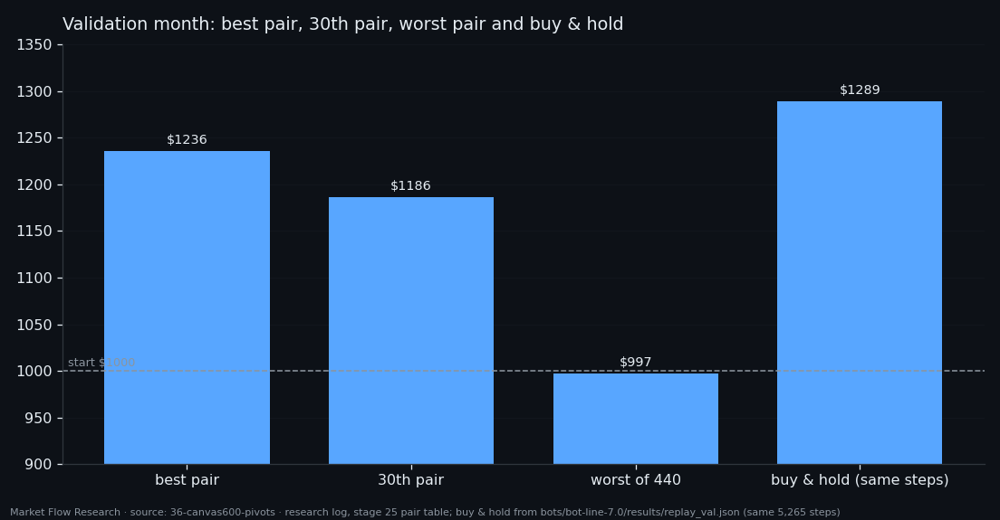

One Account, Two Networks — 440 Buy-and-Sell Pairs on Validation, and Why the Best Still Trails the Market
A buy network and a sell network were put on one $1000 account under one set of rules: one trade per 2.3% zigzag leg, take-profit 1.9%, stop 2.5%, and a signal from the other side closes the position. Every one of the 22 "potentially best" buy networks was paired with every one of the 20 sell networks — 440 pairs — and each pair traded the full validation month. 438 of them ended in profit. The best made $1235.78, a gain of 23.6%. Buying and holding BTC over the same month made about 29%.
① The rules of a two-sided bot
The two networks feed the same account, and every 10 minutes the bot goes through the same order. First, take-profit (1.9%) and stop (2.5%) are checked against the close — they act immediately, no confirmation. Then the 2.3% zigzag is updated causally, from closes only: a reversal of 2.3% from the current extreme starts a new leg. Then the signals: each side fires when the sum of its probabilities over its own window W reaches its own θ; if both fire at the same step, neither counts. A signal against the current leg starts a new leg of its own side.
An open trade is closed by a signal from the other side, at that step's close. A new trade opens only if there is no position and no trade has been made in the current leg yet — the bot takes one shot per move, so a long run of signals cannot buy the same move five times. Costs are 0.05% fee plus 0.02% slippage per side, the whole account goes into each trade, no leverage. W and θ of each network are the middle of its 90% zone from the previous step.
② 438 of 440 pairs in profit — best $1235.78
438 of 440 pairs ended above $1000; the best made $1235.78 and the worst $997.41. The winner pairs `BUY_pos` epoch 15 (window 180 minutes, θ 10.44) with `SELL_pos` epoch 16 (270 minutes, θ 24.84): 10 buys, all closed at take-profit, and one sell, also at take-profit. Of 25 zigzag legs, 23 signals were rejected because the leg already had its trade. Second place, `BUY_l2s10` e18 + `SELL_far` e23, made $1225.41 with a busier mix: 12 buys (9 take-profit, 1 stop, 2 closed by signal) and 7 sells (3 / 1 / 3).
Look at who wins. The top pairs are mostly buy-driven: their sell networks trade once to seven times a month. In a market that rose all month, the pairs that short least lose least.

③ Why "almost all in profit" is not the headline
Three things keep this from being a result. First, the benchmark: buying at the first validation step and selling at the last gave about $1289 — every one of the 440 pairs trails it. A bot that is flat half the time in a strongly rising month is expected to. Second, selection: the networks were chosen on validation, their W and θ were chosen on validation, and the pairs were ranked on validation. The ranking is a list of candidates, not a forecast. Third, sample size: the winning pair made 11 trades. Ten take-profits out of ten buys is what a buy signal looks like in a month that keeps rising.
So the useful output of this step is not the $1235.78. It is a working two-sided engine — rules, journal, one trade per leg — and a list of 440 pairs to test on data none of them was chosen on. That test, on held-out training weeks and on unseen days after validation, is the next article, and its winner is a different pair.

Reproduce this study
- Research log (.md, Ukrainian): goal, data, plan, scripts, every confirmed stage and table — enough to rerun the study
- Reproduction kit (.zip): the study's scripts, project rules and base scripts that build every class
If this changed how you read the tape, the natural next step is Volume Is the Fuel — Not the Steering Wheel — We recorded the Binance order book every second for six coins over five months and ran eighteen tests on what volume really does.
Volume Is the Fuel — Not the Steering Wheel
We recorded the Binance order book every second for six coins over five months and ran eighteen tests on what volume really does.
About Market Research Lab — What We Collect and Why
Most market commentary is storytelling.
From Calm to Calm: a Standard for What Counts as a Signal (BTC)
We stopped defining market signals with a stopwatch.
The Wall That Goes Quiet: What Resting Liquidity Predicts
We measured resting limit liquidity sitting on both sides of the book second by second across six coins, and asked the only question that matters:….
Comments
Discussion is powered by GitHub. Enable it by adding secrets/giscus.json (repo IDs from giscus.app).